Penzil Pro: El Arte y la Ciencia del Bocetado 3D
Guía Integral para el Diseñador del Futuro
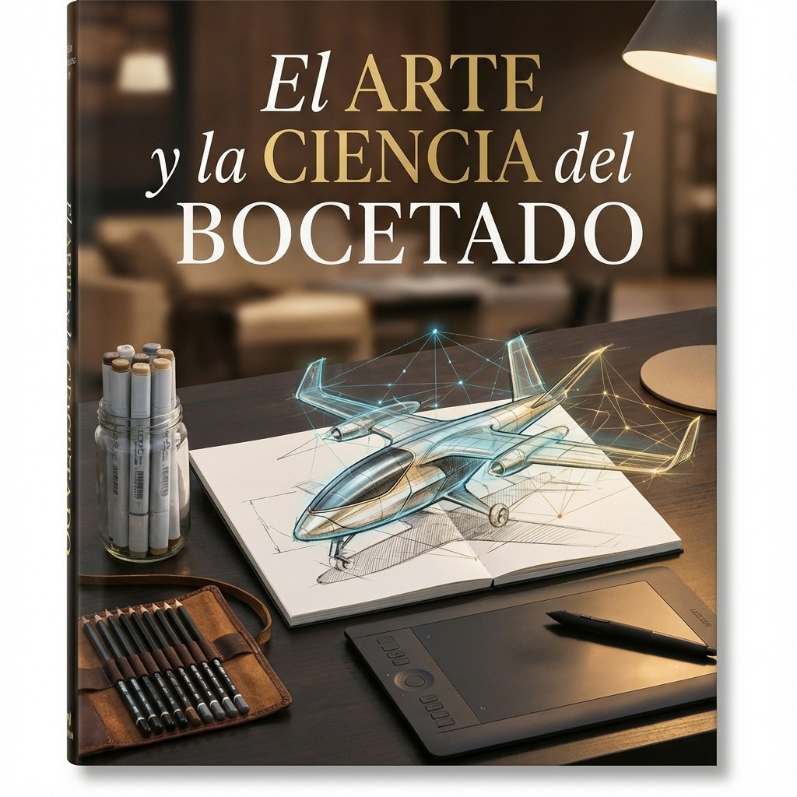
Manual del Sketcher Profesional
De la Idea al Render: Técnica e IA
Índice de Contenidos
Introducción
Parte I: Fundamentos
Parte II: Representación 2D y Perspectiva
Parte III: Construcción, Volumetría y Detalle
Parte IV: Luz, Color y Renderizado Analógico
Parte V: Diseño, Comunicación y el Futuro
Apéndices
Introducción
EL RENACIMIENTO VISUAL DEL SIGLO XXI
El Auge Imparable del Pensamiento Visual
Estamos viviendo una época extraordinaria, un momento de inflexión en la historia de la creatividad humana
que bien podría ser catalogado por las generaciones futuras como un nuevo Renacimiento
Visual. Así como el Renacimiento del siglo XV fue impulsado por la invención de la imprenta y
el redescubrimiento de la perspectiva lineal, transformando el arte, la ciencia y la difusión del
conocimiento, hoy nos encontramos en medio de una confluencia igualmente potente de fuerzas tecnológicas y
culturales que están redefiniendo radicalmente cómo percibimos, procesamos, creamos y comunicamos
información visual.
En un mundo saturado de datos pero hambriento de significado, la comunicación visual se ha vuelto la moneda
de cambio más valiosa. El diseño industrial no es ajeno a esto; al contrario, es la punta de lanza de una
nueva alfabetización donde el trazo es tan importante como la palabra escrita.
La Era de la Intención: Penzil Pro vs. IA
En la era de la inteligencia artificial, Penzil cumple la función crítica de actuar como un puente
entre la libertad del trazo humano y la precisión técnica del espacio tridimensional. Mientras
que la IA generativa es capaz de ofrecer respuestas rápidas, herramientas como Penzil permiten al artista
"formular las preguntas correctas", inyectando intención, pensamiento crítico y descubrimientos
serendipitosos que las máquinas no pueden replicar por sí solas.
"El lápiz es el sismógrafo del cerebro. Registra cada duda, cada certeza y cada salto creativo antes de
unirse al flujo digital." Penzil traslada esta capacidad al entorno 3D, permitiendo que el diseñador defina
la estructura y la perspectiva de una idea de forma manual antes de que cualquier algoritmo intervenga.
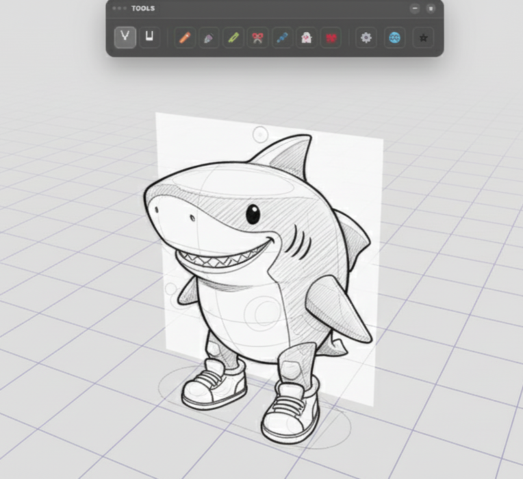
Metáfora: En la era de la IA, Penzil es como el guion de una película; la inteligencia
artificial puede ser el estudio con los mejores efectos especiales del mundo, pero sin el guion y la
dirección que tú trazas manualmente en Penzil, la obra final carecería de sentido y propósito.
Función Estratégica de Penzil Pro
- Facilitador del "Diseñador Centauro": En el flujo de trabajo del futuro, el diseñador
actúa como un "centauro" que utiliza el boceto lineal en Penzil para proporcionar la estructura y la
visión, mientras que la IA se encarga de aplicar el renderizado de materiales y texturas en tiempo real.
- Control sobre la Geometría Invisible: Penzil permite dibujar directamente sobre
superficies tridimensionales (esferas, cubos o modelos personalizados), lo que garantiza que las
proporciones sean sólidas y que la "geometría invisible" del diseño sea correcta desde el inicio.
- Refinamiento de la Identidad Artística: Gracias a propiedades como el suavizado
(Smooth) y la vibración (Wiggle), el usuario puede mantener un control profesional sobre la línea,
evitando que el diseño pierda su "chispa" humana.
- Interoperabilidad Digital: Permite la exportación a programas como Blender o Procreate,
posicionándose como la herramienta de inicio rápido que captura la idea fugaz.
Accesibilidad y Versiones
Una de las características clave de Penzil es su accesibilidad universal a través de la web en xocostudio.github.io/Penzil-Pro-1/.
- Versión Estándar: Disponible en GitHub Pages para una visualización y bocetado rápido.
- Versión Premium: Orientada a ofrecer mayor potencia, personalización y herramientas
profesionales para flujos de trabajo de alta gama.
Nota: El software se proporciona "tal cual", y su uso es bajo total responsabilidad del usuario.
Capítulo 1: ¿Por Qué Bocetar?
El Poder de la Visualización Manual en la Era Digital
1.1 La Relevancia Duradera del Bocetado
A pesar del software de modelado 3D más avanzado, los estudios de diseño líderes en el mundo (desde Apple
hasta Tesla) siguen comenzando sus procesos con lápiz y papel. ¿Por qué?
- Velocidad de Ideación: Nada es más rápido que un trazo para capturar una idea fugaz.
- Fluidez Cognitiva: El dibujo manual elimina las "capas" tecnológicas entre tu mente y
el
papel, permitiendo un pensamiento más puro.
- Comunicación Inmediata: En una reunión técnica, un boceto rápido en una servilleta o
pizarra puede resolver dudas que horas de discusión verbal no lograrían.
1.2 El Bocetado como Herramienta Cognitiva
"Dibujar no es solo representar; es una forma de ver y pensar." Uno de los beneficios más
potentes del boceto es su función como enlace cognitivo: el simple acto de formular
imágenes
mentales en un modo concreto sobre el papel permite al cerebro reflejar el concepto de manera casi
instantánea. Esta exteriorización facilita el desarrollo de nuevos conceptos a una velocidad que el
pensamiento
puramente abstracto no puede alcanzar.
El Bucle de la Iteración: Imagen Mental → Trazo en Papel → Percepción Visual
→
Refinamiento Crítico → Nueva Imagen. Este ciclo es el motor de la creatividad en el diseño.
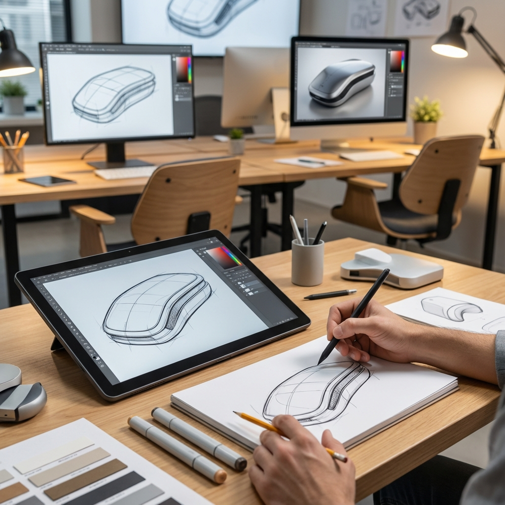
1.3 La Mentalidad del Bocetista Exitoso
Para aprender a bocetar como un profesional, primero debes cambiar tu forma de pensar. La técnica es
secundaria a la mentalidad.
Actúa como un Genio
Incluso si tus primeros trazos son torpes, dibuja con la seguridad de un maestro. Un trazo
rápido y fallido es infinitamente más valioso que un trazo lento, tembloroso y "perfecto". La confianza se
transmite en la línea.
El Cuaderno de Bocetos como Laboratorio
Tu cuaderno no es un museo; es un campo de experimentación. No arranques hojas. Cada "error" es el mapa de
un pensamiento que te llevó a la solución final. Acepta la imperfección como parte del proceso de
aprendizaje.
CONSEJO PROFESIONAL: Rompe el "miedo a la página en blanco". Antes de empezar una idea
seria, haz garabatos, círculos o simplemente tacha una esquina del papel. Una vez que el papel deja de estar
impoluto, la presión desaparece.
Capítulo 2: Tu Laboratorio Creativo
Antes de que la primera idea tome forma en el papel, es fundamental conocer las herramientas que darán vida a
tus bocetos. Este capítulo es una guía técnica sobre materiales y el entorno que nutrirá tu creatividad. No
se trata solo de enumerar herramientas, sino de entender su química, su respuesta táctil y su aplicación
profesional.
2.1 Herramientas de Decisión: Trabajando con Intención
En el diseño profesional, elegimos herramientas que nos obliguen a ser valientes. Para realizar trazos vivos,
el cerebro y los músculos deben trabajar en sus mejores condiciones. No utilices lápices
convencionales que inviten al borrado constante; utiliza marcadores que no sean fáciles de
borrar
para aprender a trabajar con decisión.
- Estilográficos y Portaminas (0.5 o 0.7): Preferiblemente de color
azul.
Ofrecen la ventaja de no tener que ser afilados y permiten un sombreado sutil mediante técnica
monocromo.
- Bolígrafos de Punta de Aguja (0.2, 0.4 mm): Evitamos los de bola rodante (bic) por
su
excesivo deslizamiento. La punta de aguja aporta un rozamiento controlado, vital para detener la
mano
con precisión milimétrica.
- Papel Layout DIN A3 (60 g/m²): El estándar de oro. Su bajo gramaje permite el calco
y su recubrimiento especial evita que la tinta "sangre", manteniendo los bordes de tus trazos
nítidos.
Kit de Supervivencia Técnica: Además del trazo, un diseñador requiere reglas, escuadas,
cartabones, transportador de ángulos, compás y plantillas. Instrumentos de corte como el bisturí o cutter
son
esenciales para la creación de muescas y guías táctiles.
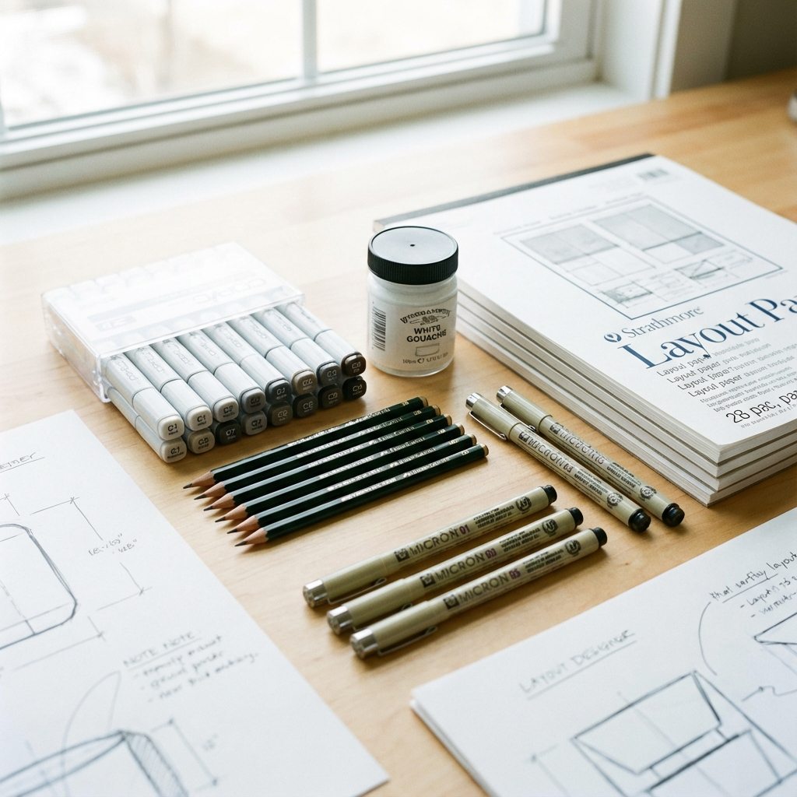
2.4 Ergonomía del Espacio Creativo
La postura no es una cuestión de salud, sino de calidad de línea. Bocetar una recta larga
requiere un pivote en el hombro, no en la muñeca. Si la mesa es demasiado baja, el rango de movimiento del
brazo se bloquea.
Configuración Ideal: Mesa inclinada a 15-20 grados. Iluminación frontal-lateral (para
evitar que tu sombra se proyecte sobre el área de dibujo). Superficie de dibujo lisa pero con un "colchón"
de 5-6 hojas debajo para suavizar el impacto del lápiz.
EL RITUAL DEL CALENTAMIENTO: Un diseñador nunca ataca el papel "frío". Dedica 5 minutos a
trazar líneas paralelas infinitas, ochos fluidos y elipses concéntricas. Esto "despierta" la memoria
muscular del brazo y asegura que cuando empieces el boceto real, tu trazo sea seguro y no vacilante.
Capítulo 3: La Línea: El Alma del Boceto
"Un dibujo es simplemente una línea que salió a pasear"
La línea es el componente atómico del diseño industrial. Es el rastro visible de un pensamiento tomando
forma, la frontera entre el vacío y el volumen. Este capítulo explora la física de la línea y cómo un simple
trazo puede imbuir tus ideas de autoridad técnica y dinamismo.
3.1 La Filosofía del Trazo Vivo: Rapidez e Intención
Los trazos hechos con rapidez conservan toda la intencionalidad y dinamismo. La agilidad en
la línea
no es una cuestión de prisa, sino de precisión y simplificación. Un buen trazo no deja que se note nunca el
esfuerzo de observación del autor; debe parecer un "golpe de suerte" perfectamente controlado.
"Para realizar trazos vivos, el cerebro y los músculos deben trabajar en sus mejores condiciones. La línea
es
una firma; está impregnada de la personalidad del diseñador."
3.2 La Psicología de la Línea: Sensaciones y Significados
En el diseño industrial, la dirección de una línea no es neutral; comunica valores específicos al cliente:
- Línea Horizontal: Expresa reposo, estabilidad, calma y horizonte.
- Línea Vertical: Transmite firmeza, elegancia y elevación espiritual.
- Línea Oblicua: Sugiere inestabilidad, fuga, rapidez y movimiento dinámico.
- Línea Curva/Ondulada: Evoca sensualidad, fluidez, ritmo y suavidad volumétrica.
- Línea Quebrada: Comunica energía, ruptura, peligro y filo técnico.
3.3 La Física de la Línea: Del Hombro al Papel
Dibujar es un acto físico. Para líneas largas y fluidas, el punto de rotación debe ser el
hombro.
La muñeca debe mantenerse firme para evitar micro-vacilaciones que ensucien la "limpieza" del trazo.
Ghosting Avanzado: Practica el movimiento en el aire hasta que sientas el ritmo. Cuando
finalmente toques el papel, hazlo sin miedo. Un trazo seductor es aquel que se siente sutil pero seguro.
3.2 El Lenguaje del Grosor de Línea (Line Weight)
En un boceto lineal, no hay color ni sombreado para indicar volumen. La única herramienta para crear
profundidad es el Peso de Línea. Un dibujo con grosores uniformes se siente plano y hereda
la estética de un diagrama técnico aburrido. Un boceto profesional tiene jerarquía:
| Tipo de Línea |
Dureza/Ancho |
Función |
| Outline (Contorno) |
0.8 - 1.0mm |
Define la silueta contra el fondo. Ancla el objeto. |
| Major Profile |
0.5 - 0.7mm |
Cambios drásticos de plano y bordes visibles. |
| Minor Details |
0.2 - 0.3mm |
Botones, líneas de partición, radios pequeños. |
| Construction |
2H / Muy suave |
Rejillas, ejes de simetría, guías invisibles. |
3.3 Calidad de Línea: Confianza vs. "Pelos"
Un trazo profesional se caracteriza por ser continuo y decidido. Muchos estudiantes
"sobre-dibujan" una línea, realizando múltiples trazos pequeños para formar una curva (lo que llamamos
"línea de pelos" o peluda). Esto comunica inseguridad y destruye la lectura visual.
Actúa como un Genio: Incluso si la línea no cae exactamente donde querías, es preferible un
trazo rápido y "erróneo" que uno lento y "perfecto" pero tembloroso. El cerebro del espectador promedia las
líneas dinámicas y las interpreta como intención artística.
TÉCNICA DE LA LÍNEA DE SOMBRA: Engrosa ligeramente las líneas del lado opuesto a la fuente
de luz proyectada. Esto crea una sensación inmediata de masa y peso sin necesidad de usar un solo marcador
de sombra.
3.4 Tipos de Líneas de Carácter
- Contornos (Outlines): Definen la silueta global.
- Contornos Transversales (Cross-contours): Líneas que envuelven la forma (como las de un
globo terráqueo) para explicar la curvatura tridimensional de superficies orgánicas.
3.4 El Poder de las Múltiples Líneas
No busques la línea única perfecta al principio. El cerebro promedia 2 o 3 líneas ligeras y fluidas para
percibir una forma correcta. Es mejor tener tres líneas seguras que una sola línea
temblorosa y lenta.
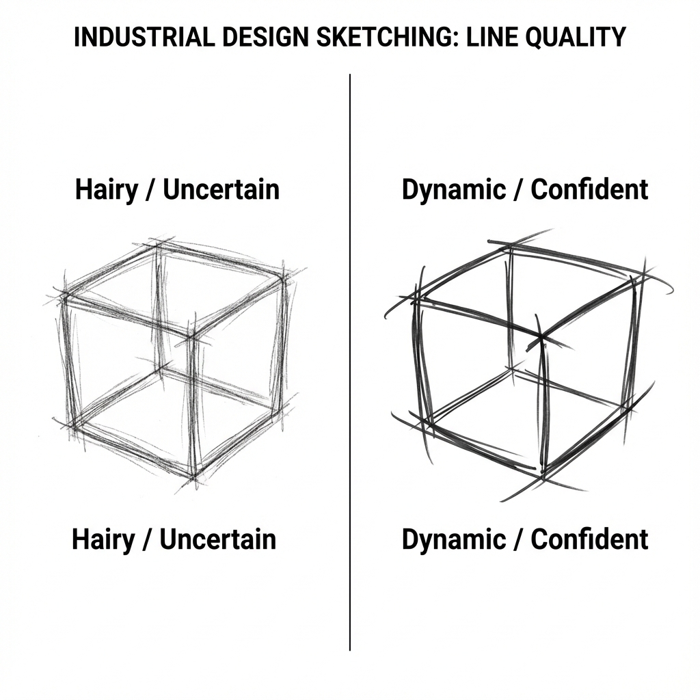
REGLA DE ORO: Aplica el "Ghosting": practica el movimiento en el aire
sobre
el papel antes de bajar el lápiz. Cuando decidas trazar, hazlo con decisión y velocidad. La confianza se
nota en la suavidad del trazo.
PARTE II: Forma, Espacio y Proyección
Dominando la Arquitectura del Dibujo
En esta segunda parte del libro, trascendemos la línea pura para adentrarnos en la construcción rigurosa. El
diseñador industrial no dibuja "cosas"; construye realidades físicas en el papel. Para ello, debemos dominar
dos lenguajes fundamentales: la proyección ortográfica (para la precisión técnica) y la
perspectiva (para la comunicación emocional y espacial).
"La perspectiva es el teatro donde ocurre el diseño, pero la proyección ortográfica es el guion que define
la verdad del objeto."
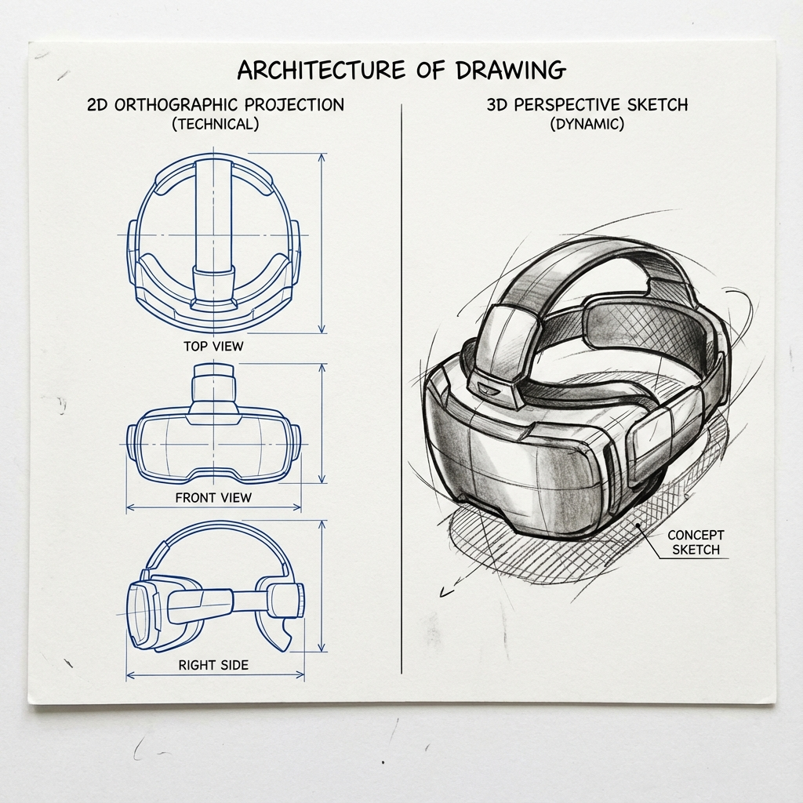
Capítulo 4: Representación 2D y Proyección Ortográfica
El Lenguaje de la Verdad sin Distorsión
4.1 Fundamentos de la Proyección
El dibujo ortográfico es un sistema de ingeniería que proyecta un objeto tridimensional sobre superficies de
dos dimensiones paralelas. A diferencia de la perspectiva, no hay puntos de fuga; todas las líneas de
proyección son paralelas entre sí y perpendiculares al plano del dibujo.
Dato Técnico: En Europa usamos habitualmente el Primer Diedro (Sistema Europeo),
donde el objeto se sitúa entre el observador y el plano. En EE.UU. se prefiere el Tercer Diedro
(Sistema Americano). Para el bocetado de ideación, la coherencia es más importante que la normativa
estricta.
Alineación y Cajas de Contención
La clave absoluta de la precisión en 2D es la alineación. Si cambias la altura de un botón
en la vista frontal, debes proyectar inmediatamente esa línea a la vista lateral.
- Bounding Boxes: Antes de dibujar detalles, traza rectángulos que definan el ancho, alto
y profundidad total del objeto.
- Líneas de Proyección: Usa líneas extremadamente finas para conectar las vistas. Esto
garantiza que la rueda de un coche esté al mismo nivel en el alzado y en el perfil.
4.2 Comunicación de Profundidad en el Plano 2D
¿Cómo hacemos que un dibujo plano parezca volumétrico? Mediante el uso estratégico de indicadores visuales:
| Indicador |
Efecto Visual |
| Grosor de Perfil |
Las líneas más gruesas en el contorno exterior "separan" el objeto del fondo. |
| Solapamiento |
Dibujar una línea que corta a otra indica qué pieza está "delante" de la otra. |
| Jerarquía de Sombras |
Incluso un sombreado plano (flat shading) de 2 bits puede definir caras curvas. |
Vistas de Sección: Mirando el ADN del Producto
Bocetar una "sección" (un corte transversal) es vital para entender grosores de material y componentes
internos. Usa rayados (hatching) a 45 grados para indicar las áreas donde el "cuchillo
imaginario" ha cortado el material sólido.
EJERCICIO PRO: Dibuja tu smartphone actual en tres vistas (frontal, lateral y superior).
Asegúrate de que el conector de carga esté perfectamente alineado en las tres vistas usando guías ligeras.
Capítulo 5: El Espacio Percibido: Sistema de Perspectiva
La Construcción de la Ilusión Tridimensional
La perspectiva es el método geométrico para representar el espacio tal como lo percibe el ojo humano. En
diseño
industrial, no usamos la perspectiva de forma artística, sino como una herramienta de control
espacial.
5.1 Elementos del Sistema de Perspectiva
Para construir con precisión, debemos definir primero los parámetros de nuestra "cámara" imaginaria:
- Línea de Horizonte (LH) / Eye Level (EL): Marca la altura de los ojos del observador.
Determina si vemos la cara superior (vista de pájaro) o inferior (vista de hormiga) del objeto.
- Puntos de Fuga (PF): Donde convergen las líneas paralelas. En el diseño de producto, lo
más común es usar 2 puntos de fuga para objetos situados en el suelo.
- Centro de Visión (CV): El punto exacto donde apunta la mirada. Es vital para evitar
distorsiones asimétricas.
- Cono de Visión: El área de aproximadamente 60° donde la perspectiva es natural. Fuera
de
este cono, las formas se estiran de manera irreal.
Concepto Avanzado: El Punto de Estación (SP). Es la posición física del observador. Cuanto
más cerca esté el SP del plano del dibujo, más "agresiva" y distorsionada será la perspectiva.
5.2 Los Tres Tipos de Perspectiva
- 1 Punto de Fuga: Ideal para interiores o cuando una cara del objeto es
perfectamente paralela a nosotros. Muy usado en bocetos rápidos de frontales.
- 2 Puntos de Fuga: El estándar del diseño industrial. Permite ver dos caras del
objeto con dinamismo.
- 3 Puntos de Fuga: Añade un tercer punto (zenital o nadir). Se usa para objetos muy
grandes o cuando la cámara está muy inclinada, aportando una sensación de escala monumental.
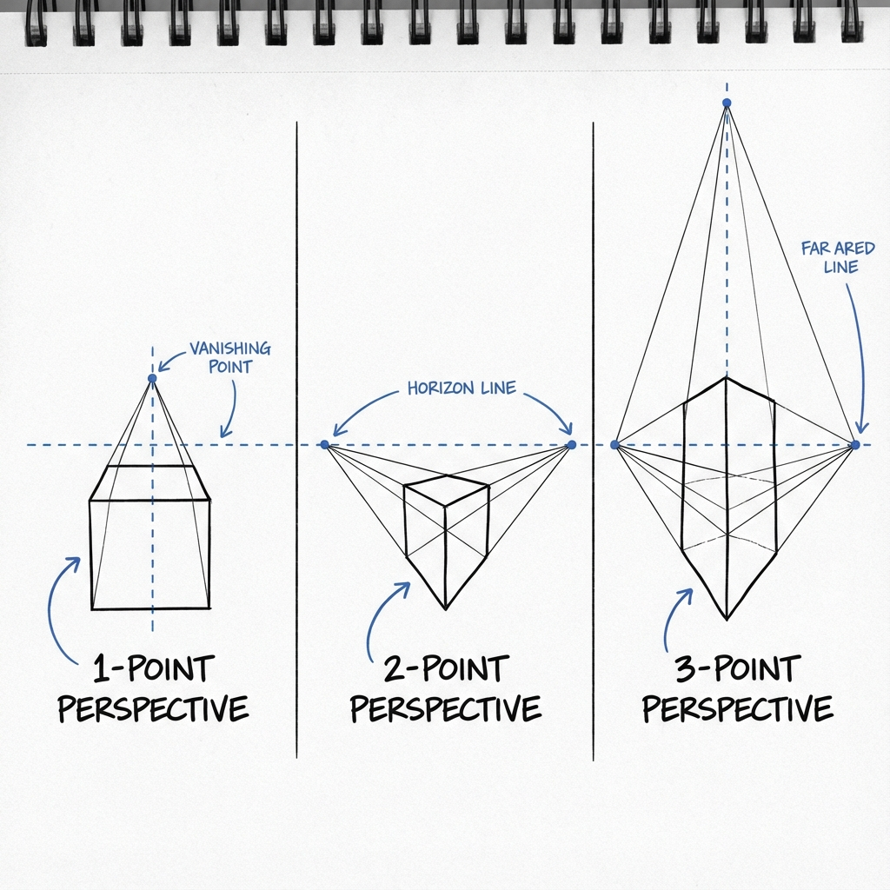
REGLA DE ORO: Nunca coloques los puntos de fuga demasiado cerca uno del otro dentro del
papel. Esto provocará una distorsión "ojo de pez". Lo ideal es que al menos uno de los puntos esté fuera del
formato físico del papel.
Capítulo 6: Geometrías Complejas: Elipses y Planos
Dominando la Curva y la Inclinación
6.1 La Maestría de la Elipse
Una elipse es un círculo visto en perspectiva. Es la forma más común en el diseño (ruedas, botones, botellas)
y la que más errores genera.
Anatomía de la Elipse Professional
- Eje Mayor: La dimensión más ancha de la elipse.
- Eje Menor: El eje de simetría más corto. CRÍTICO: En un cilindro, el
eje menor debe estar alineado con el eje de rotación del objeto.
- El Grado: Define cuánto de "abierta" está la elipse. 0° es una línea recta (en el
horizonte), 90° es un círculo perfecto.
Regla del Grado: A medida que una elipse se aleja de la línea de horizonte, su grado
aumenta. Las elipses de la base de una botella deben ser siempre más "redondas" que las del cuello.
6.2 Planos Inclinados y Rampas
No todo en el mundo es horizontal o vertical. Para dibujar superficies inclinadas (como el parabrisas de un
coche):
- Dibuja primero la "caja base" recta.
- Busca los puntos de fuga auxiliares (VVP) situados en la vertical de tus puntos de fuga principales.
- Conecta los vértices para crear la pendiente exacta.
6.3 Simbología Geométrica: Formas con Propósito
En el diseño de producto, las formas no son solo estética; son semántica. Cada geometría
básica
transmite sensaciones y cumple funciones físicas específicas:
- El Triángulo (Penetración y Estabilidad): "Cuidado que pincho". Cuanto más afilada
es
una punta, mayor capacidad de penetración tiene (Presión = Fuerza / Superficie). Sugiere estabilidad
apoyado en su base e inestabilidad extrema sobre un vértice.
- La Esfera (Protección y Totalidad): Forma de protección por excelencia. Sin
aristas,
retiene la temperatura de forma óptima y es difícil de atrapar. Transmite infinitud, movimiento
continuo
y unidad.
- El Cuadrado (Seguridad y Peso): Se caracteriza por su efecto de estabilidad
absoluta.
Sugiere sensaciones de peso, honestidad y seguridad estructural.
- Hexágono (Eficiencia Espacial): El círculo presionado por seis lados para
aprovechar
el espacio (como en las colmenas). Símbolo de ingeniería natural y estructura técnica.
- La Hélice (Fricción y Sustentación): "La fricción es el secreto". Es la forma más
sencilla de desplazarse por el aire o anclarse (tornillos).
Geometrías de la Naturaleza y la Ciencia
Para un bocetista avanzado, observar el mundo implica reconocer patrones matemáticos:
Fractales: Formas que se repiten hasta el infinito. Las plantas son fractales
por fuera; los animales lo somos por dentro.
Curva Catenaria: La forma que adopta una cuerda suspendida por dos puntos en
reposo. Es la estructura de máxima resistencia (la Sagrada Familia es una catenaria invertida).
ESTRATEGIA PROFESIONAL: No dibujes desde la memoria. Utiliza referencias reales para
aprender los "signos" del lenguaje visual. Cuantos más signos conozcas, mejor podrás expresarte sin miedo a
equivocarte.
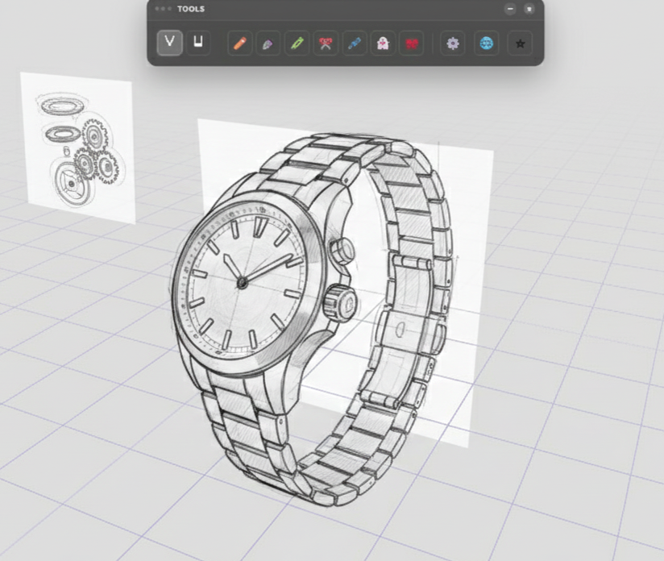
CONSEJO TÉCNICO: Construye siempre la "geometría invisible". Dibuja los lados
del objeto que no se ven (wireframe) para asegurar que las proporciones sean sólidas y que las piezas reales
encajen entre sí.
PARTE III: Construcción, Volumetría y Detalle
Dando Cuerpo a la Idea
En esta sección, daremos el paso definitivo hacia la tridimensionalidad sólida. Dejaremos de pensar en líneas
planas para empezar a pensar en volúmenes con masa. Aprenderemos a usar sistemas de
rejillas
para mantener la precisión y a esculpir formas complejas mediante operaciones lógicas, tal como lo haríamos
en un software de modelado 3D, pero con la agilidad del lápiz.
"Todo objeto complejo es solo una colección de formas simples unidas por una lógica constructiva."

Capítulo 7: El Sistema de Rejillas y el Andamiaje Visual
Creando el Mapa del Espacio
7.1 La Rejilla (Grid): Tu GPS en el Papel
La rejilla es la estructura invisible que garantiza que todos los elementos de tu dibujo comparten el mismo
espacio y escala. Sin una rejilla, es casi imposible mantener la coherencia en objetos largos o escenas con
múltiples componentes.
Construcción de una Rejilla de Transferencia
Para crear una rejilla precisa de 2 puntos de fuga:
- Módulo Base: Define un cuadrado en el suelo. Este será tu "unidad de medida" (ej. 10x10
cm).
- Duplicación por Diagonales: Dibuja una X en el cuadrado. Traza una línea desde el
vértice inferior, pasando por el centro del lado opuesto, hasta cortar la línea de fuga. Así habrás
duplicado el cuadrado exactamente en perspectiva.
- Transferencia Vertical: Proyecta la rejilla del suelo hacia arriba para crear un cubo
unitario.
Consejo de Productividad: No dibujes la rejilla completa en cada boceto. A menudo, basta
con marcar "pistas" de la rejilla en los bordes para mantener la orientación mental.
7.2 El Concepto de "Andamiaje" (Scaffolding)
El andamiaje consiste en encerrar cualquier forma compleja dentro de una Caja Envolvente
(Bounding Box). Si puedes dibujar una caja bien proporcionada en perspectiva, tienes el 90%
del trabajo hecho.

Capítulo 8: Bocetado Observacional y Deconstrucción
Aprender a Ver para Aprender a Crear
El bocetado observacional no trata de "copiar" la realidad, sino de analizar su ingeniería
interna. Un diseñador mira un objeto y ve volúmenes, ejes y radios de curvatura.
8.1 El Análisis Forense del Objeto
Cuando te enfrentes a un objeto real (ej. un ratón de ordenador), sigue este proceso:
- Identifica el Eje de Simetría: Casi todos los productos industriales tienen uno.
- Captura el "Gesto": La línea de flujo principal que define el carácter del objeto.
- Deconstrucción Primitiva: ¿Es un cilindro que se funde con una esfera? ¿Es una caja con
caras alabeadas? Dibújalo primero como esas formas básicas.
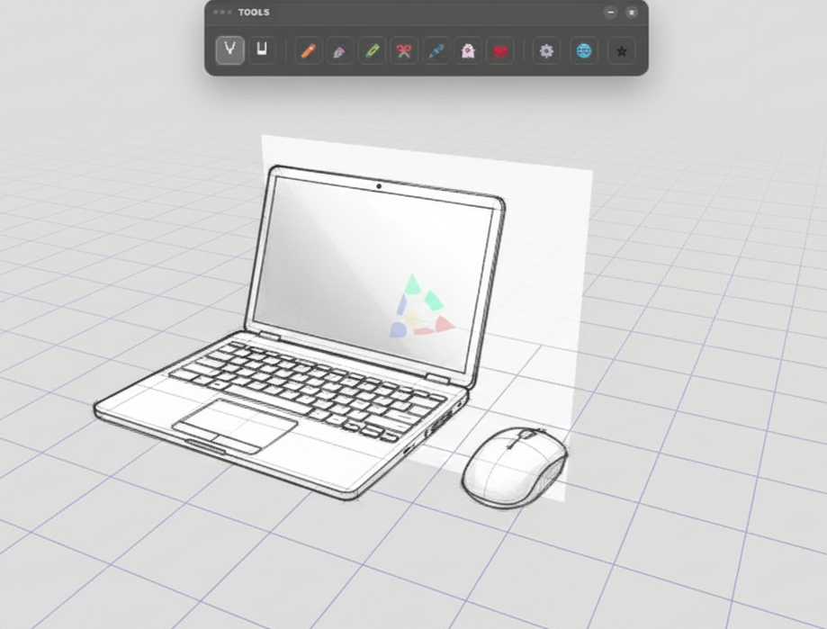
MÉTRICA VISUAL: Usa tu lápiz con el brazo extendido para medir la relación entre el ancho
y el alto. ¿Cuántas veces cabe el ancho del objeto en su altura? Mantén esa proporción en tu dibujo.
Capítulo 9: Escultura Visual: Operaciones Booleanas
Modelado Analógico de Alta Precisión
9.1 El Pensamiento Booleano
En el diseño industrial moderno, rara vez creamos formas de un solo trazo. Construimos volúmenes y luego los
"operamos":
- Sustracción (Corte): Quitar una rebanada a un cubo para crear un plano inclinado
(ej. la pantalla de un terminal de venta).
- Adición (Fusión): Unir un cilindro a una esfera (ej. el mango de una jarra).
- Intersección: Donde dos formas se cruzan. La línea de intersección es la más
importante; es el "secreto" del realismo.
9.2 La Línea de Partición (Parting Line)
Todo objeto fabricado por inyección de plástico o fundición tiene una línea donde los dos moldes se separan.
Dibujar esta línea no es solo un detalle técnico; es lo que hace que el objeto parezca producible. La línea
de partición debe seguir la trayectoria más ancha del objeto para permitir el desmoldeo.
9.3 Radios y Empalmes (Fillets & Rounds)
En el mundo real, los bordes afilados de 90° casi no existen. Cada arista tiene un radio de
curvatura. Dibujar estos radios transforma un bloque de cemento abstracto en un producto
manufacturado y ergonómico.
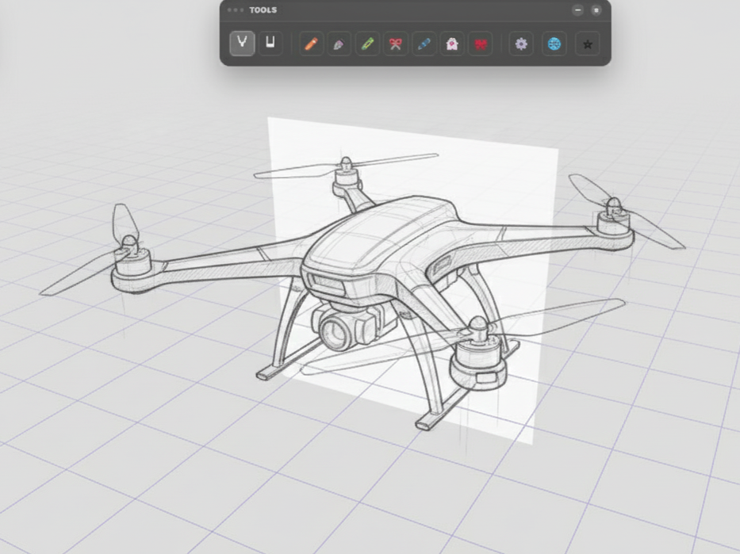
Dato de Diseño: Un radio grande transmite suavidad y ergonomía; un radio pequeño y tenso
transmite precisión y tecnicismo. Elige el radio según el mensaje de tu producto.
PARTE IV: Luz, Color y Renderizado Analógico
La Comunicación del Material y el Volumen
En esta etapa, transformamos bocetos de "alambre" en representaciones que parecen tener peso, textura y
materialidad. El renderizado analógico no busca el fotorrealismo, sino la persuasión visual
y la claridad en la comunicación de las propiedades físicas del producto.
"La forma se explica con la línea, pero la función y el material se cuentan con la luz."
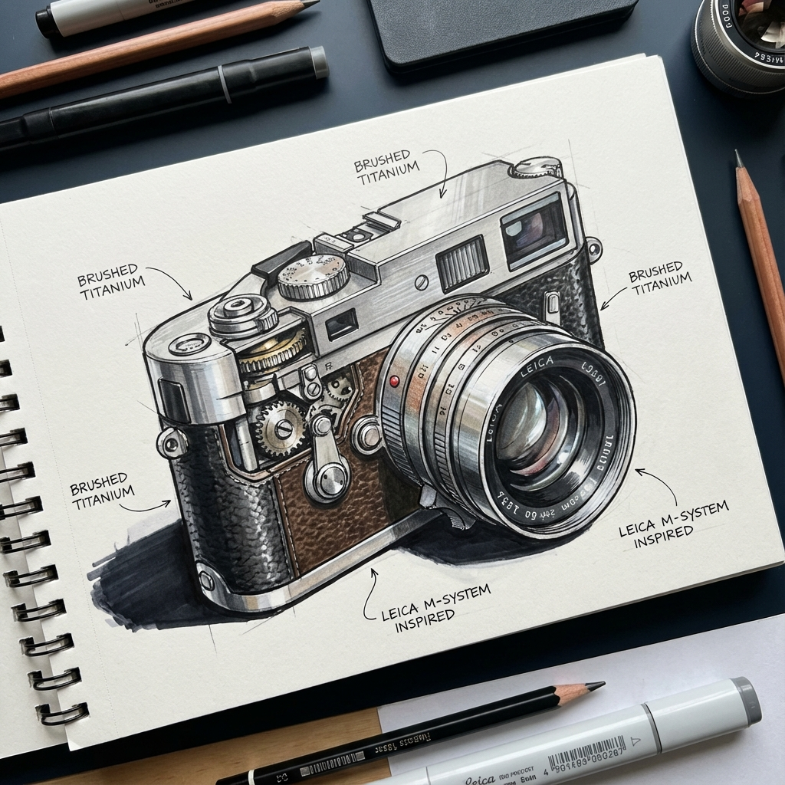
Capítulo 10: La Física de la Luz: Aplicación de Valores
Entendiendo cómo la Luz Define la Forma
10.1 Los 5 Componentes de la Iluminación
Para renderizar un objeto con realismo profesional, debemos aplicar sistemáticamente estos cinco elementos de
valor:
- Brillo Especular (Highlight): La reflexión directa de la fuente de luz. Indica que
la superficie es lisa o pulida. Se representa con el blanco puro del papel.
- Medio Tono (Midtone): El valor intrínseco del material. Es donde mejor se aprecia
el
color y la textura del objeto.
- Sombra de Núcleo (Core Shadow): La zona de transición más oscura en el volumen.
Define el cambio de plano principal y la redondez de la forma.
- Luz Reflejada: CLAVE DEL REALISMO. Es la luz que rebota del
entorno
hacia la zona de sombra. Nunca dejes una sombra negra pura; la luz reflejada le da "aire" y volumen.
- Sombra Arrojada (Cast Shadow): La sombra que el objeto proyecta sobre el suelo.
Ayuda a "clavar" el producto en la superficie, dándole peso real.
10.2 Oclusión Ambiental (Ambient Occlusion)
Es la sombra de "contacto" que ocurre donde dos superficies se tocan o donde la luz tiene dificultad para
penetrar (ej. en una grieta profunda). Es una línea muy oscura y fina que añade un nivel de detalle extra al
ensamblaje del producto.

CONSEJO PROFESIONAL: Cuando apliques sombras, decide una sola dirección de luz y mantenla
coherente en todo el boceto. Una iluminación caótica destruye la tridimensionalidad.
Capítulo 11: Color, Valor y Técnicas de Marcador
Comunicando Materialidad con Eficacia
En el diseño industrial, el color no es un elemento decorativo; es una variable funcional.
Comunica el peso del objeto, su temperatura táctil y su posicionamiento en el mercado. Sin embargo, para un
bocetista, el valor (claridad/oscuridad) es mucho más importante que el matiz (color).
11.1 La Maestría del Marcador de Alcohol
Los marcadores (tipo Copic o Chartpak) son el estándar de la industria por su capacidad de secado rápido y
sus
propiedades de mezcla. Sigue estas técnicas para un acabado profesional:
- Capas (Layering): Un solo marcador puede darte 3 o 4 valores diferentes. Deja secar la
primera capa y aplica otra encima para oscurecer zonas específicas sin cambiar de rotulador.
- El Degradado "Húmedo sobre Húmedo": Mezcla dos colores mientras la tinta aún brilla en
el papel. Esto crea transiciones suaves vitales para superficies curvas.
- Sentido del Trazo: El trazo del rotulador debe seguir siempre la geometría del
objeto. Si renderizas un cilindro, tus trazos deben ser verticales o seguir la curva de la
elipse.
TRUCO PROFESIONAL: Usa un marcador "Blender" (transparente) no solo para mezclar, sino para
"limpiar" excesos de color o crear brillos sutiles en zonas ya coloreadas.
11.3 Psicología del Color y Simbolismo
El color en el diseño industrial atraviesa dos filtros: el físico y el subjetivo/cultural.
No pintamos
para decorar, sino para evocar sensaciones que validen la función del producto:
- Blanco: Calma, pureza, sabiduría. Asociado a la limpieza técnica (clínicas,
cocinas).
- Negro: Misterio, elegancia, nobleza y distinción profesional.
- Gris: Neutralidad, frialdad técnica e indecisión sofisticada.
- Rojo: Fuerza, ambición, calor y peligro. Capta la atención de forma inmediata.
- Azul: Inteligencia, fidelidad y profundidad (mar/cielo). Un estándar de
confianza.
- Amarillo: Jovialidad, alegría y acción (oro/riqueza).
- Verde: Equilibrio, naturaleza y frescura (ecologismo y juventud).
- Naranja: Entusiasmo, dinamismo y energía espiritual.
- Violeta: Templanza, espiritualidad y feminidad sofisticada.
- Marrón: Masculinidad, severidad y calidez orgánica (madera/piel).
Valores Expresivos del Color
Como diseñador, debes decidir en qué "modo" estás aplicando el color:
- Color Icónico: La aplicación natural del material (madera, metal, piel).
- Color Saturado: Colores puros que producen euforia y atraen la atención visual.
- Color Fantasía: Uso manipulado para crear sensaciones de misterio o irrealidad.
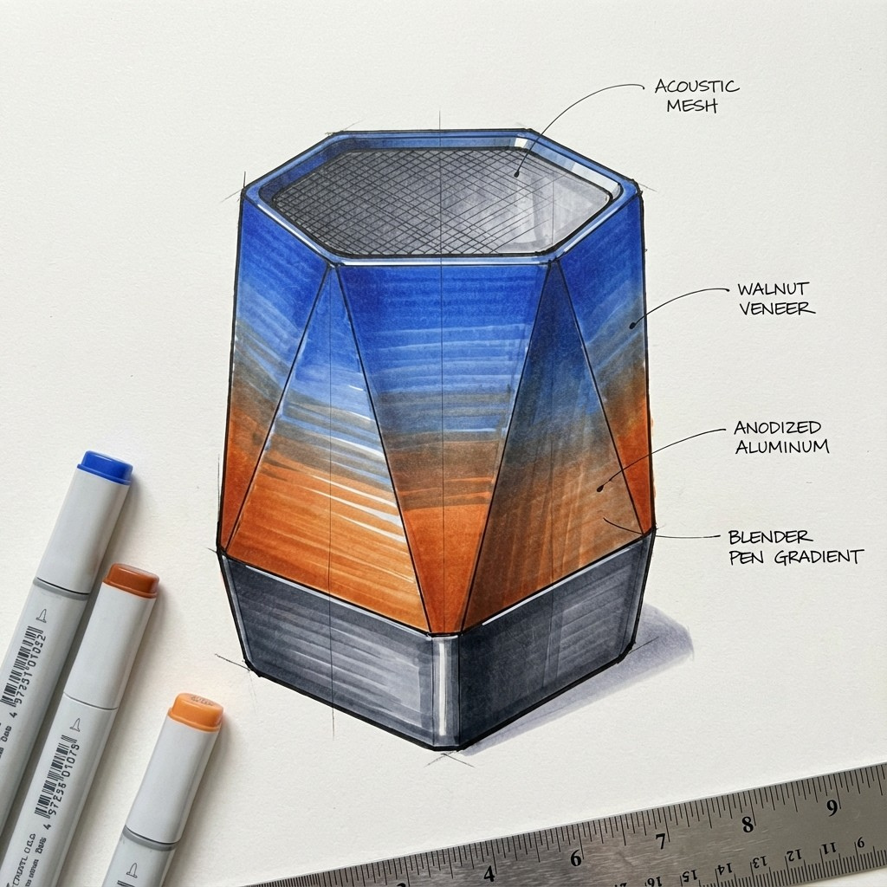
REGLA DE ORO: Si dudas, usa menos color. Un boceto con mucho color suele parecer "sucio".
Es mejor dejar zonas del papel en blanco para que el dibujo "respire".
Capítulo 12: Física de la Superficie y Reflejos Avanzados
El Arte de Engañar al Ojo con la Realidad
Para dibujar superficies que parezcan reales (metales, plásticos de alto brillo, fibras), debemos entender
cómo la luz rebota en ellas. No pintamos el objeto; pintamos lo que el objeto ve.
12.1 El Efecto Fresnel y la Reflexión
El Fresnel es el fenómeno donde las superficies se vuelven más reflectantes cuando las miramos desde un
ángulo rasante. En una pantalla de móvil negra, verás tu reflejo claramente si la inclinas casi de lado,
pero no lo verás si la miras de frente.
| Material |
Lógica de Reflexión |
| Cromo / Espejo |
Contraste extremo. Refleja el horizonte como una línea nítida y distorsionada. |
| Aluminio Cepillado |
Reflejos "estirados" o anisotrópicos. Los brillos siguen la dirección del cepillado. |
| Plástico Soft-Touch |
Sin reflejos especulares. Se define por degradados de sombra muy suaves y aterciopelados. |
12.2 Continuidad de Superficie (G2) y Highlights
En el diseño de alta gama (Apple, Porsche), las superficies tienen continuidad de curvatura (G2). Esto se
traduce en que los brillos (highlights) fluyen sin saltos bruscos a través del objeto. Al
dibujar, asegúrate de que tus líneas de luz crucen las juntas de las piezas con fluidez si quieres que el
diseño parezca premium.

CONSEJO DE RENDER: La "Luz de Acento" (Rim Light) en el borde trasero del objeto ayuda a
despegarlo del fondo y a explicar la silueta en zonas de sombra profunda.
PARTE V: Diseño, Comunicación y el Futuro
El Boceto como Narrativa de Ingeniería
En esta parte final, trascendemos la técnica pura para centrarnos en la estrategia. El
bocetado no
solo sirve para ver un objeto, sino para explicar cómo funciona, cómo se fabrica y por qué es la mejor
solución. Exploraremos cómo componer páginas persuasivas y cómo el bocetado manual evoluciona en la era de
la IA y la Realidad Extendida.
"Un buen dibujo muestra cómo es un objeto; un gran boceto explica por qué debe existir."
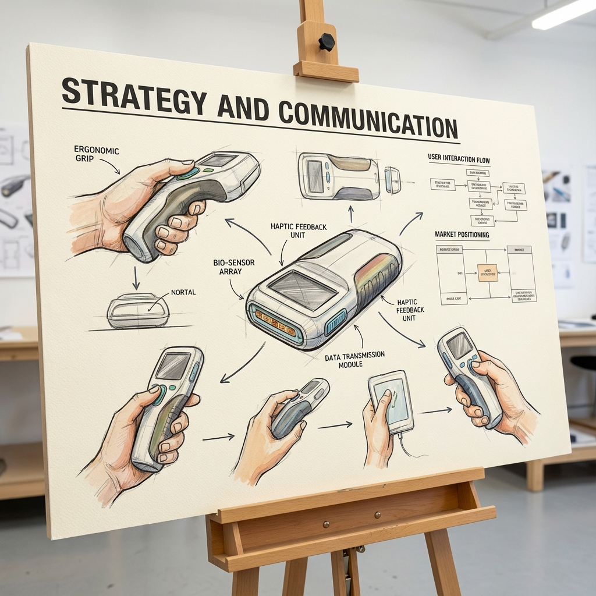
Capítulo 13: Estrategias de Ideación y Composición de Página
Organizando el Caos Creativo
13.1 El ADN de la Innovación: Creatividad y Estrategia
La creatividad es el proceso de tener ideas originales que aporten valor. En el diseño, no
es un
don místico, sino un proceso que se puede enseñar y entrenar mediante la destreza y la práctica asidua. Ser
creativo
es, por encima de todo, no tener miedo a equivocarse.
ESTRATEGIA DE ÉXITO: Pasión + Constancia.
Opción Creativa o Diferente: Suerte + Trabajo.
Los Elementos del Diseño en la Composición
Para construir una página equilibrada, debemos dominar los elementos que la componen:
- Elementos Conceptuales: Punto, Línea, Plano y Volumen (no tienen existencia física, son
la base).
- Elementos Visuales: Forma (bordes/superficies), Medida, Color y Textura.
- Elementos de Relación: Dirección, Posición (percibidos), Espacio y Gravedad (sentidos).
- Elementos Prácticos: Representación, Significado y Función.
Flujo de Trabajo Estratégico: Investigación → Visión (Inferencias) → Diseño.
Este proceso transforma un briefing en un escenario real de mercado.
13.2 El Realismo Implícito y la Jerarquía Visual
Bocetar con rapidez conserva toda la intencionalidad y dinamismo. El Realismo
Implícito consiste en aplicar un alto nivel de detalle solo en las zonas críticas, permitiendo
que
la agilidad de los trazos simplifique el resto del objeto.
Componiendo el "Board" de Diseño
Una página de cuaderno profesional debe explicar el proceso de toma de decisiones:
- El "Héroe": El boceto que atrae la mirada (perspectiva 3/4).
- Storyboard de la Observación: Secuencia de bocetos que revelan la interacción del
usuario.
- Anotaciones Técnicas: Flechas que señalan el "Cómo" y el "Para Qué".
13.2 El Uso del Fondo y la Sombra de Suelo
Para que tus objetos no "floten" en el papel, usa sombras de suelo (Drop Shadows) o bloques
de color de fondo. Un simple rectángulo de marcador gris detrás del objeto puede hacerlo destacar
instantáneamente y darle una presentación premium.
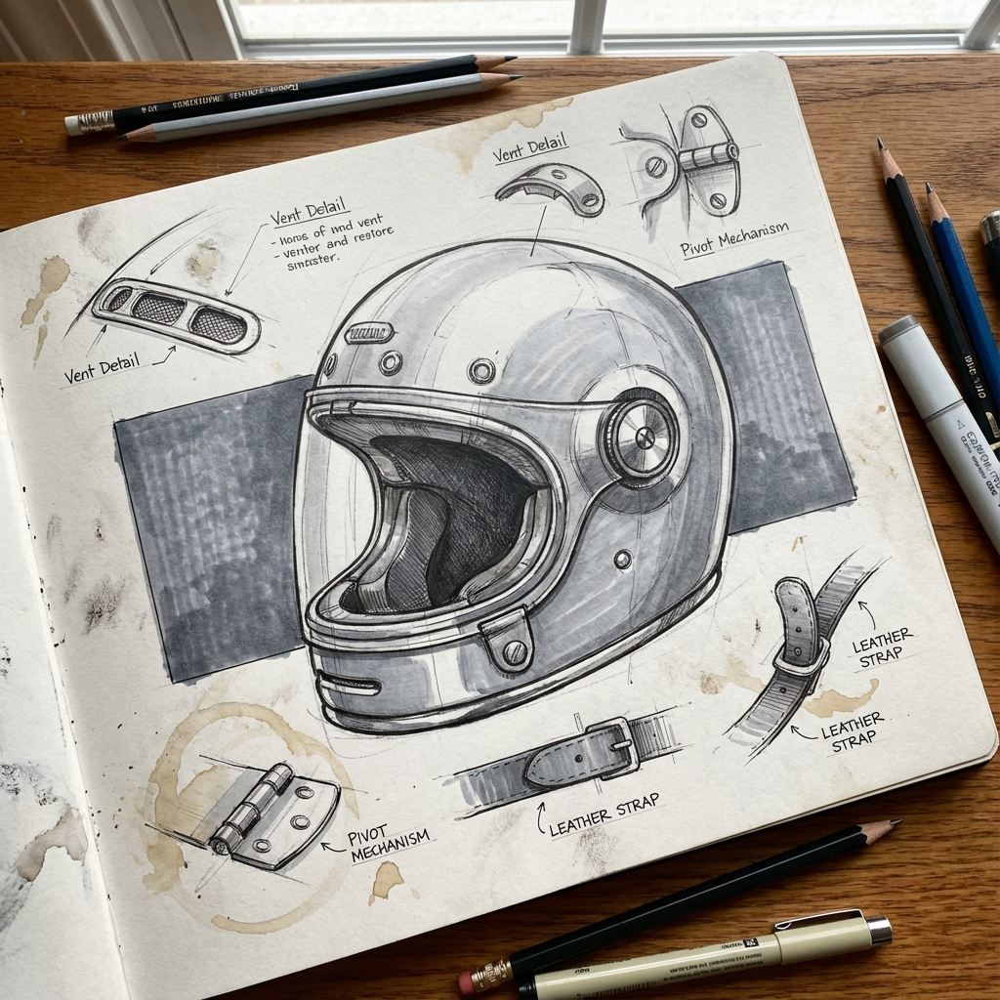
Capítulo 14: Bocetado Explicativo y Storytelling Visual
Explicando el "Cómo" y el "Para Quién"
Un boceto profesional no solo muestra qué es un producto, sino cómo se ensambla y cómo interactúa con el
usuario. Aquí es donde el dibujo se convierte en documentación técnica persuasiva.
14.1 Vistas Explotadas (Exploded Views)
Es la herramienta definitiva para explicar la complejidad interna. Separa los componentes a lo largo de
un
eje común, manteniendo la misma perspectiva exacta para todas las piezas. Es vital que las líneas de
guía
(trace lines) conecten cada pieza con su punto de anclaje original.
14.2 Secciones y "Cutaways"
A veces, la mejor forma de explicar un producto es cortarlo por la mitad. Usa el bocetado de
sección para mostrar el grosor de las paredes de plástico, el alojamiento de las baterías o
el
flujo de aire en un sistema de ventilación. Sombrea las áreas de corte con un rayado fino y técnico.
14.3 ¿Cómo mostrar tus bocetos ante un cliente?
No debemos mostrar todos los bocetos realizados, sino solo los que nos han llevado a la toma de
decisiones. La presentación debe ser una narrativa lógica que parta de la observación
empírica
(entrevistas, empatía) hasta llegar a la propuesta final.
Escenario de Trabajo: Briefing → Investigación de Mercado → Concepto →
Sketching
→ Presentación Interna → Presentación a Medios.
¿Cómo aprender rápido el Lenguaje del Boceto?
- Estudia la obra de los que admiras: Analiza sus signos visuales; cuantos más
conozcas,
mejor podrás expresarte.
- Evita la Memoria Pura: Utiliza siempre referencias reales. No dibujes desde
recuerdos
borrosos si quieres que el objeto tenga carácter emocional y técnico.
- Práctica Asidua: El bocetaje es la forma más directa de revelar tus habilidades
comunicativas. Es, en esencia, un llamamiento a la imaginación técnica.
"Una imagen vale más que mil palabras, pero solo si esa imagen es claramente legible y comunica una
intención
concreta."
Narrativa de Uso: Dibuja manos o siluetas humanas simplificadas interactuando con el
objeto.
Esto explica la escala inmediata y la ergonomía del diseño sin necesidad de palabras.
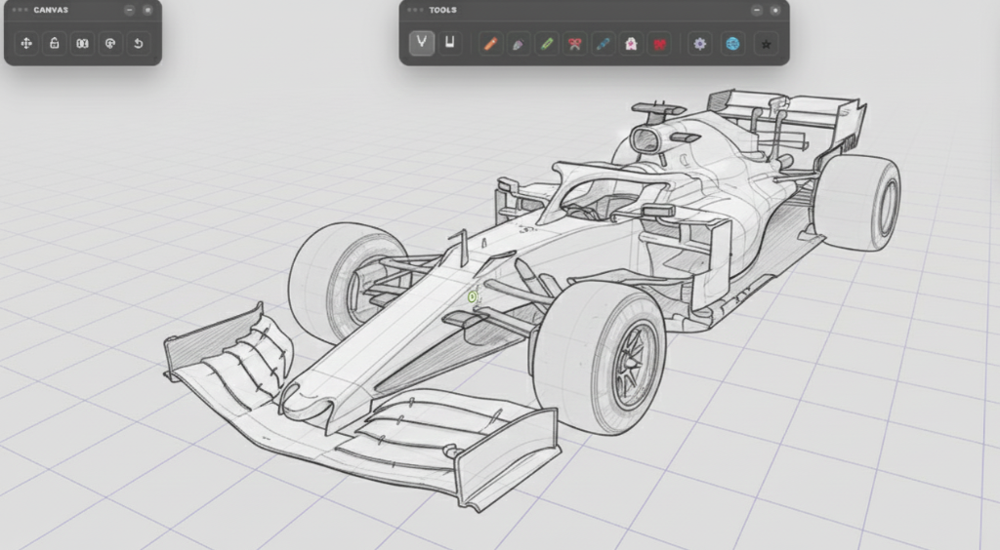
Capítulo 15: El Sketching del Mañana: IA y XR
La Evolución Digital del Trazo Humano
Estamos entrando en una era donde la frontera entre el boceto manual y el modelo digital desaparece. Sin
embargo, la intención del diseñador sigue siendo el núcleo del proceso.
15.1 El Diseñador "Centauro": Sketching + IA
La IA generativa (como Vizcom o Stable Diffusion) no sustituye el dibujo. El flujo de trabajo del futuro
es
híbrido: tú proporcionas la estructura, la perspectiva y la intención mediante un boceto lineal, y la IA
aplica el renderizado de materiales en tiempo real. Esto permite iterar propuestas estéticas a una
velocidad
nunca vista.
15.2 Sketching en la Nube de Puntos (VR/AR)
Dibujar en el espacio 3D mediante Realidad Virtual (VR) elimina la necesidad de puntos de fuga
matemáticos.
Estás dibujando a escala 1:1, caminando alrededor de tu diseño. Es la forma más pura de "esculpir con
aire"
y garantiza que la ergonomía sea perfecta antes de fabricar un solo prototipo.
REFLEXIÓN FINAL: No importa cuán avanzada sea la tecnología; el lápiz siempre será el
conector más rápido entre tu cerebro y el mundo exterior. Domina la base, abraza el futuro.
Apéndices
Glosario de Términos
- Ambient Occlusion (Oclusión Ambiental):
- Sombra suave que se produce en los puntos de contacto o rincones donde la luz ambiental apenas
penetra.
- Andamiaje (Scaffolding):
- Estructura de cajas simples que sirven de guía para construir formas complejas.
- Contorno Transversal (Cross-contour):
- Línea que describe el volumen de una superficie envolviéndola.
- Efecto Fresnel:
- Fenómeno físico donde el reflejo de una superficie es más intenso en ángulos rasantes.
- Ghosting:
- Técnica de practicar el movimiento del trazo en el aire antes de tocar el papel.
- Line Weight (Grosor de Línea):
- Variación del grosor del trazo para crear jerarquía y profundidad.
- Realismo Implícito:
- Estrategia de detallar solo las zonas clave de un boceto para que el cerebro complete el resto.
Recursos y Bibliografía Recomendada
- "How to Draw" (La biblia de la construcción geométrica).
- "Sketching: Drawing Techniques for Product Designers".
- "Rapid Viz".
- Vizcom.ai: Herramienta líder para renderizado acelerado por IA.
- Gravity Sketch: Software de diseño y bocetado en Realidad Virtual.
© 2026 Penzil Pro: El Arte y la Ciencia del Bocetado 3D